睡在免費的帳篷裡固然不錯，但是關掉燈之後裡面就變成了昆蟲的樂園。
各式各樣的昆蟲在黑夜中爬來爬去，嗡嗡的飛行，或是從空中掉落在地上。
雖然有帳棚將我和昆蟲隔離開來，但是隔著帳篷依然能感受到昆蟲遊走的觸感，加上耳朵聽到的盡是昆蟲悉窸窣窣爬在帳棚上的聲音。
感覺全身發癢，開著燈的時候看起來明明就是那麼樣的正常，怎麼關掉燈就變成不同的世界。
疲憊壓過昆蟲的夜間遊行，今晚依然睡得安穩。
早上一邊收拾行李，一邊整備小多的輪胎鋼絲，現在嚴格督促自己每天都要確實檢查過小多的狀況才准騎車上路。
七點半的時候離開這個空無一人的加油站，超過晚上十二點之後，連員工都回家睡覺去了。
騎了一小時的車，今天吹的是期待已久的順風，將我向西邊的關卡緩緩推過去，距離倒數一千公里。
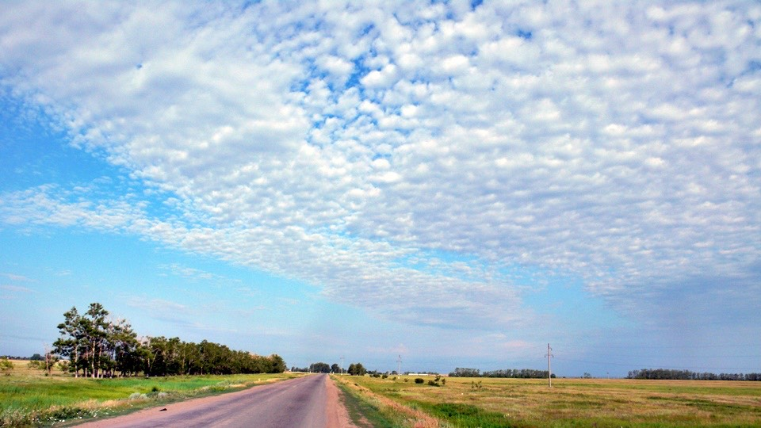
出發一小時後，發現另一間附設有餐廳的加油站，敲敲門說我想吃東西，加油站的員工揮手說還沒營業，要等一下。
於是我就坐在店門口的階梯處，吹著涼爽的風，看著地圖規劃接下來十天的路線該怎麼安排。
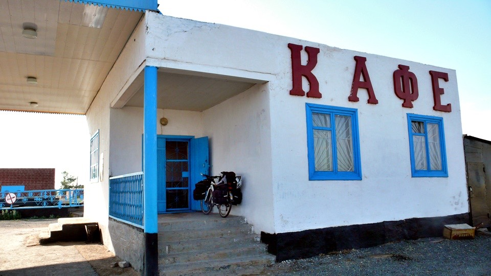
有一個開著車來加油的婆婆，跟加油站的員工是好朋友，我只要簡單的自我介紹過一次，接下來已經認識我的人都會將我介紹給其它人。
婆婆看著我和小多，從車上拿出一頂水藍色加上黃色條紋的帽子，沒有帽緣，像是回教徒戴的那種，這是我收到第二頂做為禮物的帽子。
此時餐廳的人也來上班了，一起拍了張大合照。
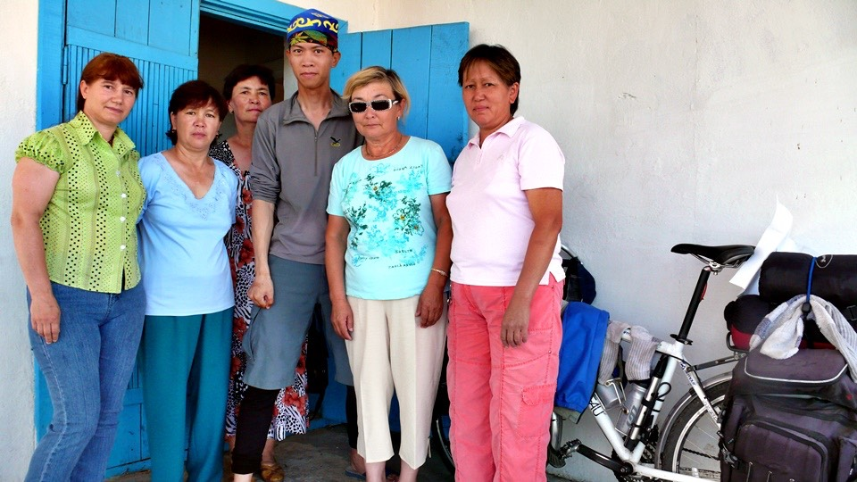
餐廳的人送上豐盛的餐點，作為涼菜的紅蘿蔔絲拌牛肝、馬鈴薯燉肉、紅燒羊肉，連奶茶都泡了兩杯給我，做為早餐實在太豪華了一點。
悠哉享受美食，雖然好吃，但已經開始想念起中國風味的食物了。
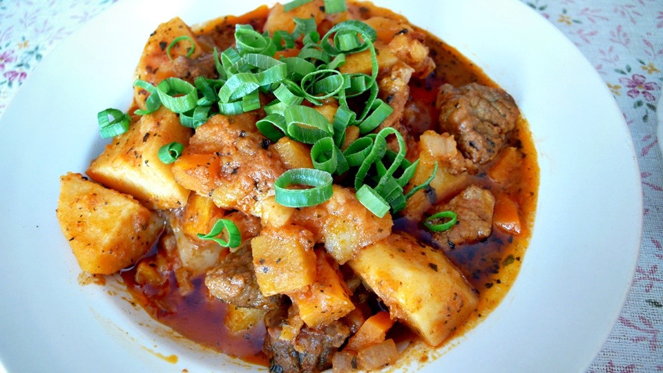
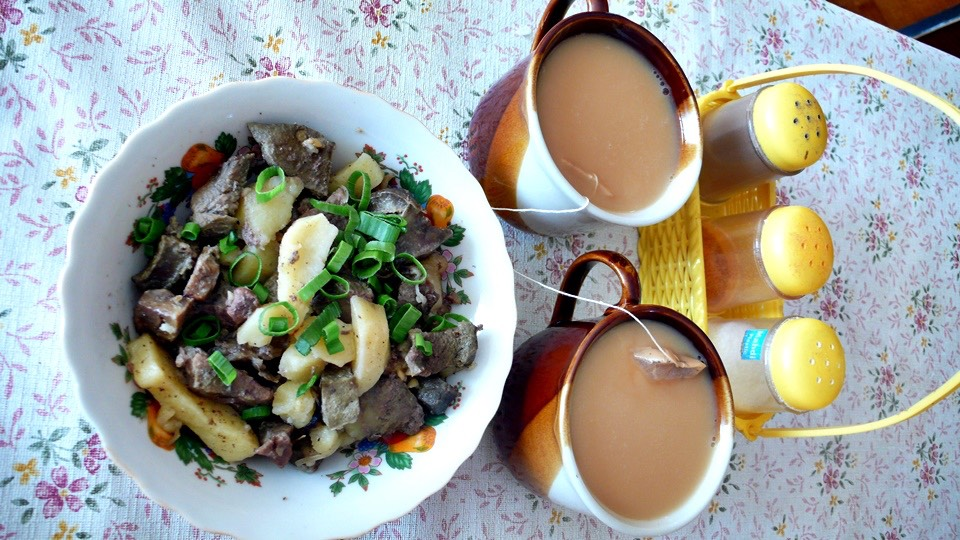
用餐完畢幫忙收拾餐桌，打開腰包問這一餐要多少錢？
又是沒人肯收錢，免費招待我吃。平白無故就吃人家那麼多飯，不付錢的感覺真的有點奇怪，那就買點東西當儲糧，順便在這裡消費一下。
共計買了一大盒的蘋果汁、兩條草莓蛋糕、兩包花生餅乾、一包巧克力豆，抱著一堆零食去打包。
盡量將重的東西往前面裝，減輕後側的負重。
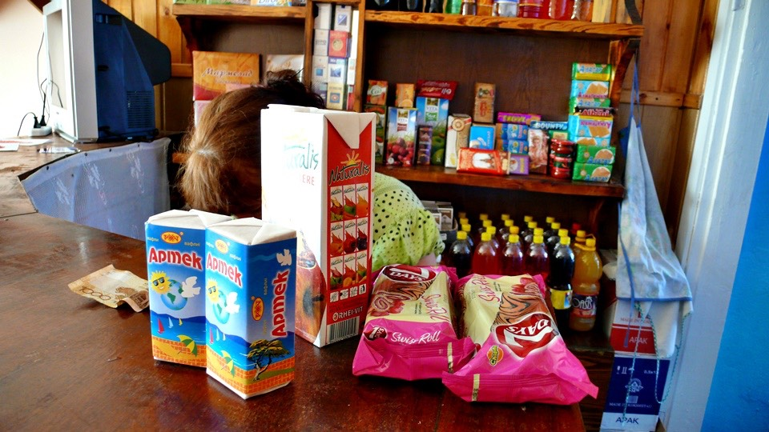
吃飽喝足，十點繼續騎車，小多在順風的吹拂之下好像電動車一樣，不用怎麼踩就會前進，騎得很舒服。
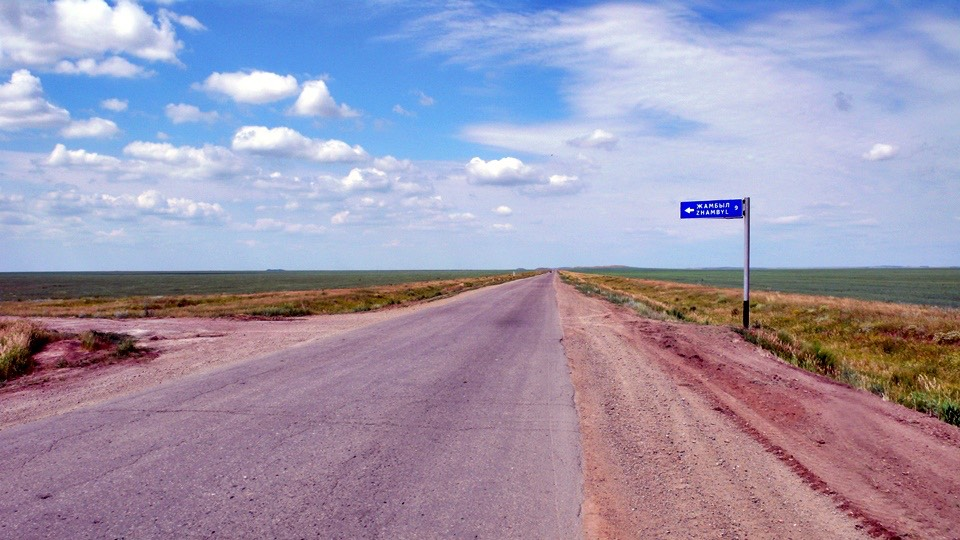
延續前幾天的景色，路旁種了好多好多的綠色植物，矮矮短短不超過二十公分高度，在風勢下搖曳著。
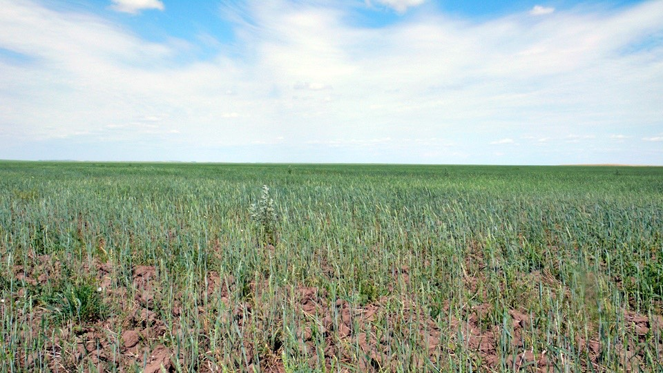
路旁翻了一輛卡車，傾倒了滿地的廢金屬，當地人處理的方法是在原地將壞掉的卡車分解，跟其它的廢金屬一起回收。
也不管這樣佔據了半個車道，大夥很開心的在路邊拆車，我到的時候已經將車頭拆個精光了。
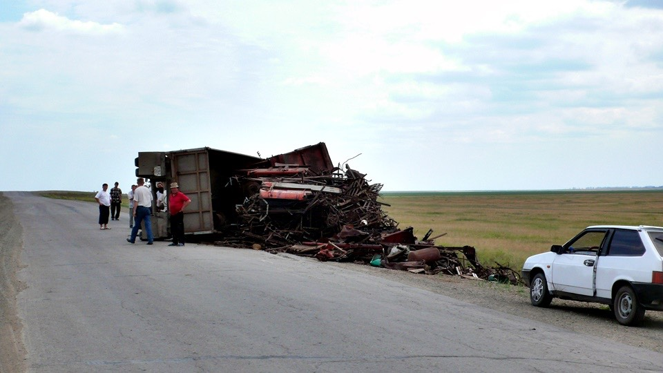
在這麼愉快的天候下往西邊走，直到下午一點，發現另一間加油站附設餐廳，剛好是午餐時間。
店裡生意很好，我先買一盒柳丁汁，然後看服務生送出來的每一道菜，發現想吃的時候就跟服務生說也給我一盤這個。
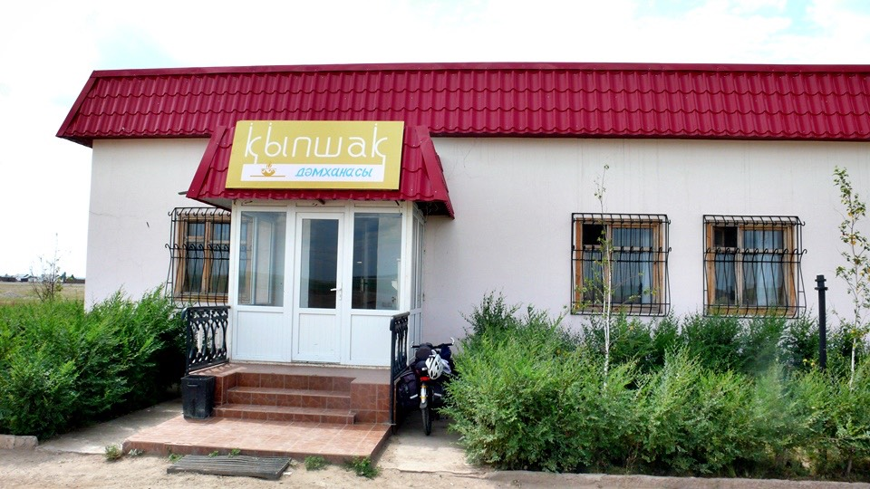
這個是很像兒童午餐的漢堡肉通心麵，只能說超級好吃，自己點餐還是有好處，羊肉湯跟馬鈴薯已經吃得有點膩了。
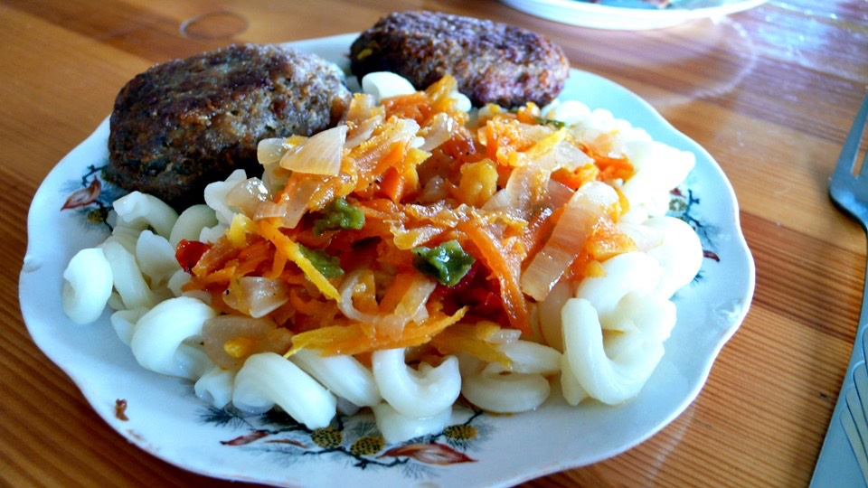
吃飽後在餐廳裡窩到下午三點半，心裡想說反正今天是順風，騎車很輕鬆，不急著走。
等離開餐廳時，發現天空變得風起雲湧，路面則是風沙滿天飛舞，進去餐廳到出來真是風雲變色，而且連風向都改變了。
本來是難得的順風好天氣，現在變成大逆風外加隨時會下雨。
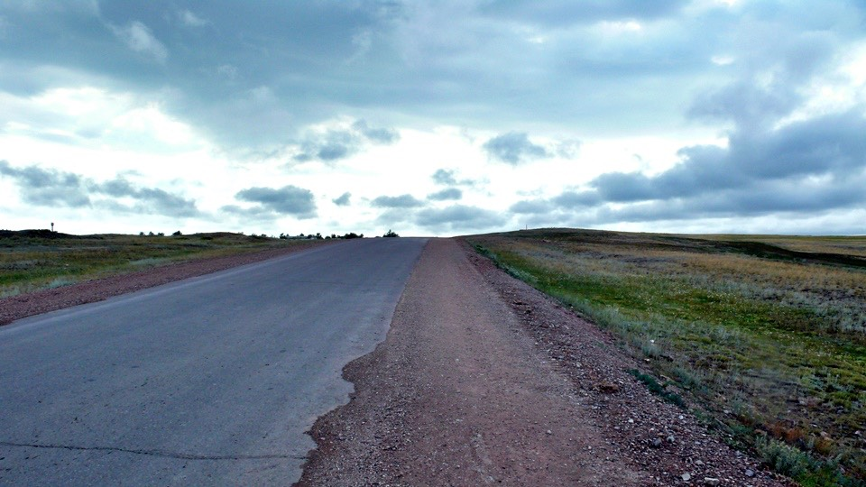
怎麼會這樣，早知道就不要浪費那麼多時間在餐廳休息，後悔也來不及，風大還是得騎車，下雨的話就認命吧。
早上是電動車的小多，下午變成牛車，使盡吃奶力氣踩踏板，時速都無法超過十公里。
氣喘吁吁的騎車，感覺騎了好久，累了停下來休息一下，一回頭發現剛剛吃飯的餐廳只在後方一公里左右的地方，根本就沒騎多少路。
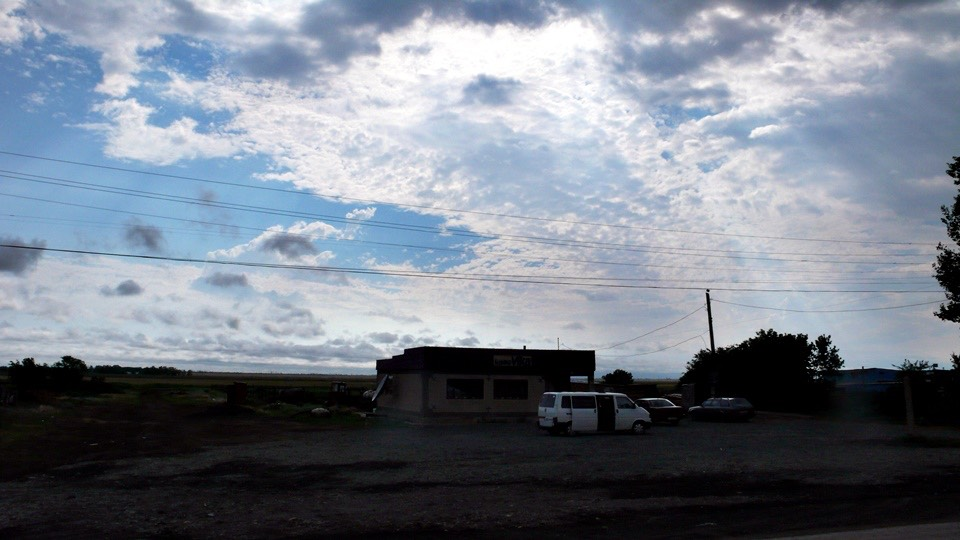
風勢大得很誇張，農地裡的作物好像都要被連根拔起，在強風中瘋狂的搖擺著。
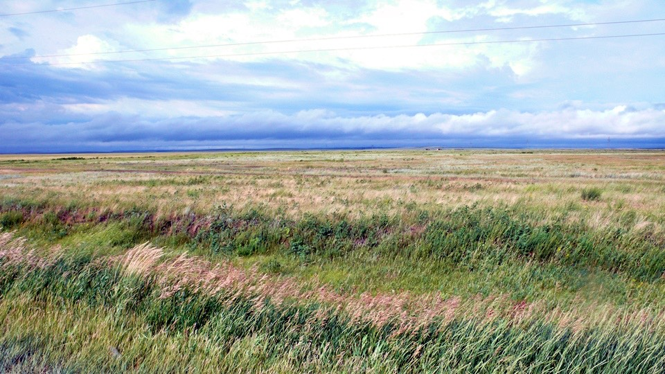
天空的雲分成兩種，一種是長條型的，像火車廂那樣，顏色是深灰色，隨著風勢在空中飄動，真的很像火車在開。
一節一節的火車烏雲往首都的方向開過去，我的前方則是白亮亮的天空，散布著雪花般的小雲朵。
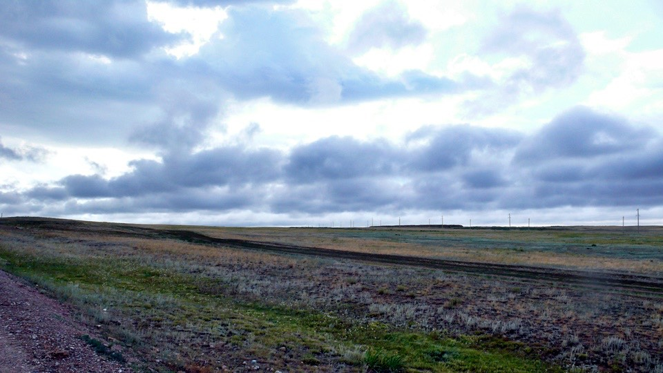
慢慢的騎，雨滴時落時停，不怎麼有威脅性，兩小時候進入城鎮，地上都是下過雨後的積水坑。
這裡養了好多隻的鵝，因為鎮上綠地很多，鵝就直接隨意的放生讓牠到處跑，也不怕走失或是跟別人家的混在一起。
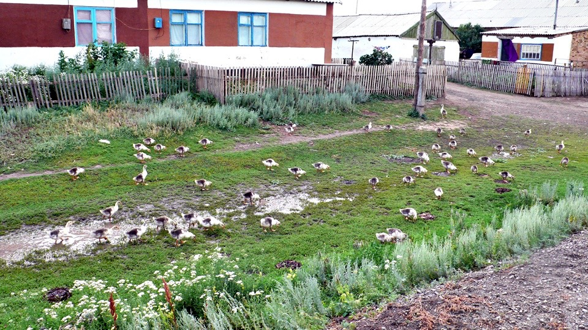
所以整個鎮上全都是鵝的蹤影，有些呆頭鵝攜家帶眷的在路邊喝水坑裡的積水，也不怕會被大卡車給壓扁。
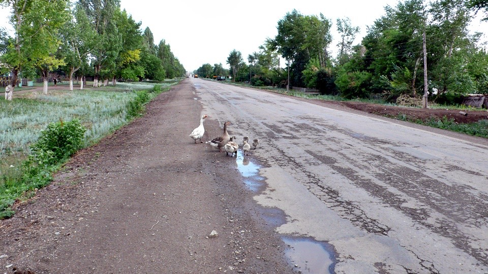
鵝都是整群整群的移動，幾隻大的帶很多隻小的，有一群已經跑到鎮外頭，準備要進行大逃亡，不想成為餐盤裡的食物。
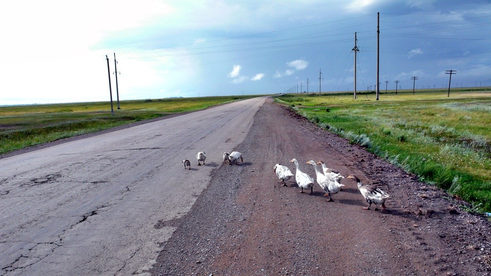
在這個鎮上問了兩位嗑瓜子的年輕人，這邊有旅館嗎？明明就是住在這裡的當地人，還要互看對方，想一下才跟我說沒有。
沒有也沒關係，根據他們的情報，往下再騎五十公里就會有旅館。
這個距離聽起來有點唬爛，而且很遠，在逆風中要騎五十公里可不是開玩笑的，姑且相信他們的情報，分一把瓜子來嗑接著往西邊騎。
大概又騎了一個多小時，十公里左右，進入另一個城鎮，站在城鎮的入口回頭望，還可以看見剛剛那個養鵝的城鎮，整個距離很近。
一個多小時才騎十公里，還有四十公里要騎，先停下來喘口氣，路邊又有人在跟我招手叫我過去聊兩句。
現在沒有聊天的心情啦，今天有預感晚上會下大雨，不找到旅館的話夜裡可能變成落湯雞。
看著車裡揮手的大叔，穿著藍色的衣服，依稀彷彿好像是警察，想不理他們也不行。
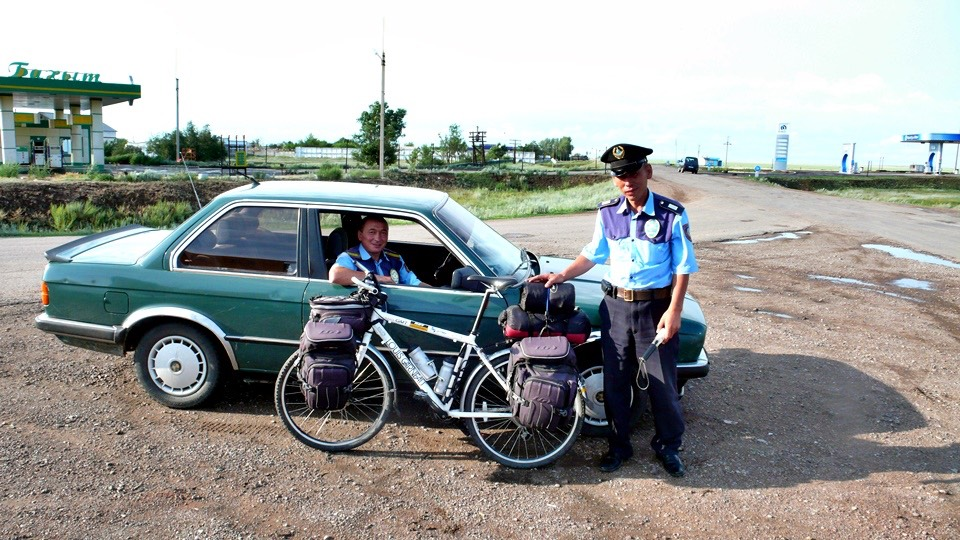
從兩位警察這裡更新旅館的情報，一樣是跟我說接著往下走，我問還要騎多遠呢？
警察笑了一下，用手指在沾滿灰塵的車身上面寫了200M，原來再走兩百公尺就有旅館了，不用騎四十公里那麼坎坷。
旅館從外面看起來不太昂貴的樣子，像這樣複合式經營，又開餐廳又開酒吧又開旅館，通常價錢都比單純一棟旅館還要便宜。
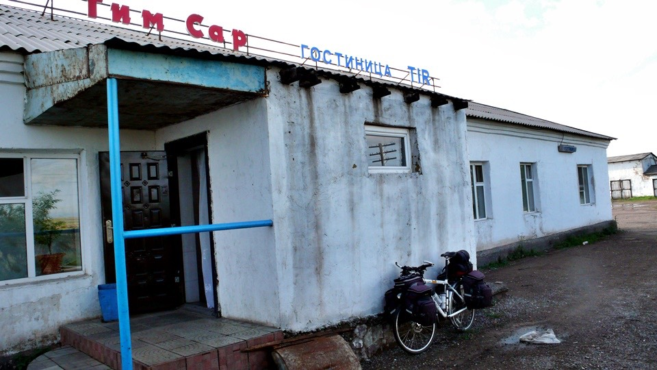
在裡面問老闆住一晚上多少錢，雖然老闆很欣賞我騎自行車旅行，但價錢很硬不給砍，在計算機按下一千一百元的數字，連一百元都不讓我殺價。
用迂迴戰法，先誇獎這邊店的吧台看起來真是漂亮呀，然後殺價，也不行。
裝窮戰法也沒有用，裝可愛戰法更是無效，他只跟我說一句，你在哈薩克騎車，有經過首都阿斯塔那吧？
你知道那邊住旅館一晚上要多少錢嗎？至少是這裡的十倍價格，所以不要跟我嫌貴要殺價。
我心裡想說阿斯塔那的住宿價貴干這裡屁事，這邊又不是阿斯塔那，但即使殺價這麼多次都不行，他的態度還是很好。
在房間裡看著窗戶外面的天氣，烏雲逐漸的靠攏起來，天空黑壓壓一片，風勢絲毫沒有減弱，慶幸自己已經平安落腳，而不是還在路上騎車。
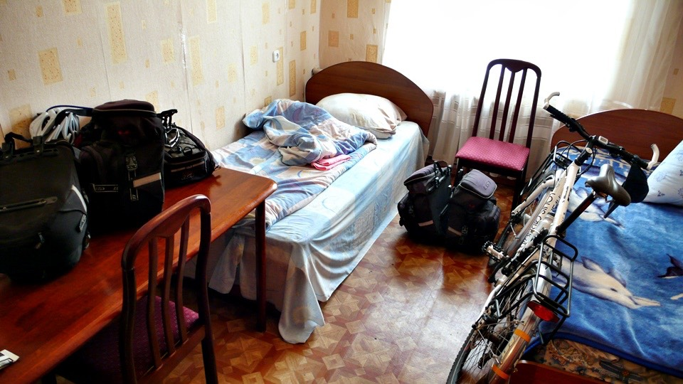
希望明天睡醒，善變的風又會送給我一個順風的好天氣，這次我會好好把握住，一口氣飆上兩百公里。
繼續閱讀：7.12 秘密基地
哈薩克-堅戈－ 1：0.26 台幣
7.11
總計：2130元
蘋果汁、草莓蛋糕、花生餅乾、巧克力球540元、柳丁汁200元、漢堡通心麵290元、旅館1100元